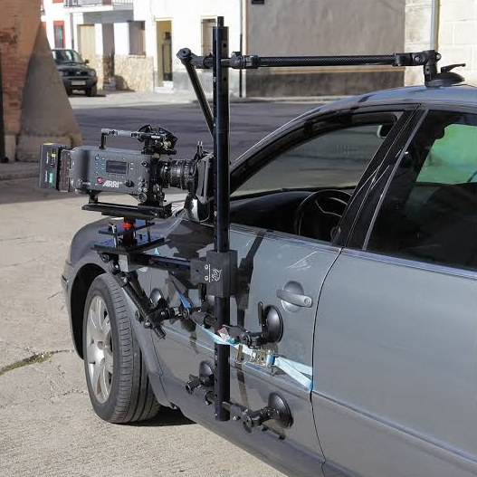

El conductor visto a través del parabrisas, la rueda girando a ras de asfalto, el paisaje reflejado en la carrocería: muchos de los planos más reconocibles de la publicidad de coches se ruedan con un carmount. Montar una cámara en un coche parece sencillo, pero un mal montaje arruina el plano o, peor, pone en riesgo al equipo y al vehículo.
Qué es un carmount
Un carmount es un sistema para fijar la cámara al propio coche que aparece en plano. Se compone normalmente de ventosas de vacío, tubos o brazos, rótulas y cinchas o tensores de seguridad. A diferencia del camera car, que rueda desde otro vehículo, aquí la cámara viaja con el coche.
Posiciones de cámara más habituales
1. Capó o frontal
Mirando al parabrisas para ver a conductor y copiloto, o mirando hacia delante para un plano subjetivo de carretera.
2. Lateral o puerta
Perfil del conductor por la ventanilla, o plano bajo de la rueda y el asfalto en movimiento.
3. Trasera
Plano del coche alejándose o mirando a los ocupantes desde atrás.
4. Interior
Cámara en salpicadero, entre asientos o en el techo interior para diálogos y detalles de conducción.

Tipos de carmount
| Tipo | Cómo funciona | Ideal para |
|---|---|---|
| Ventosas y tubos | Estructura rígida anclada con ventosas | Cámaras de cine, posiciones fijas |
| Brazo con amortiguación | Brazo que absorbe vibraciones del firme | Carreteras irregulares y velocidad |
| Carmount estabilizado | Montaje para gimbal o cámara estabilizada | Planos móviles pegados al coche |
| Montaje interior | Soportes entre asientos, techo o salpicadero | Diálogos y detalles |
Tilta Hydra Alien PRO: carmount para cámara estabilizada
En K Grip trabajamos con el Tilta Hydra Alien PRO, un sistema pensado para montar una cámara estabilizada en el exterior de un vehículo con una huella compacta. Combina un brazo con amortiguación hidráulica, que filtra las vibraciones de la carretera, con ventosas que, en sus versiones electrónicas, vigilan la presión de vacío. Permite planos muy cercanos a la carrocería con un movimiento más suave que un montaje rígido.
Seguridad: lo que no puede faltar
- Superficie limpia y lisa para las ventosas: ni polvo, ni cera, ni zonas curvas extremas.
- Doble seguridad: cada montaje exterior lleva cinchas o cables independientes de las ventosas.
- Revisión antes de cada toma y tras cualquier tramo de firme irregular.
- Velocidad acorde al montaje, ensayando antes a baja velocidad.
- Protección de la carrocería en coches de prensa o preserie.
- Vía cortada o controlada y conductor profesional cuando el plano lo exige. Lo vemos en precision driver en rodajes.
Errores habituales al rodar con carmount
- Subestimar el peso de cámara. Con óptica, monitor, baterías y follow focus, el rig puede pesar el doble que el cuerpo solo.
- Olvidar los reflejos. La carrocería y los cristales reflejan el montaje; hay que revisarlo en monitor antes de rodar.
- No prever el tiempo de montaje. Cada cambio de posición lleva su tiempo; agrupar los planos por posición ahorra horas de jornada.
- Ignorar el viento. A velocidad, una caja de matte o una bandera hacen de vela y cargan el montaje.
Qué necesitamos para preparar un carmount
Preguntas frecuentes
¿Qué es un carmount?
Un sistema para fijar la cámara al coche que se rueda, con ventosas de vacío, brazos, rótulas y cinchas de seguridad, en el exterior o en el interior del vehículo.
¿Es seguro montar una cámara con ventosas?
Sí, si se monta sobre superficie limpia, con seguridades independientes, revisión antes de cada toma y velocidad acorde al montaje.
¿Qué diferencia hay entre carmount y camera car?
El carmount fija la cámara al propio coche que aparece en plano; el camera car rueda desde otro vehículo, normalmente con grúa y cabeza estabilizada.